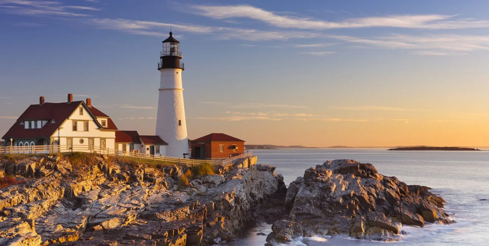
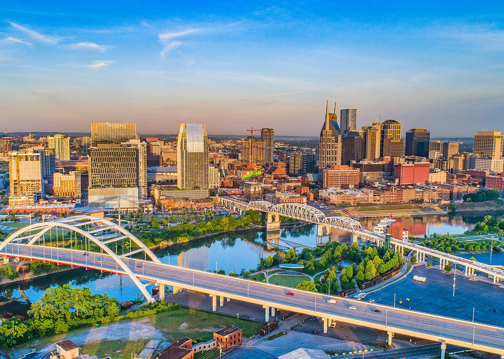

ความรู้รัฐต่างๆก่อนจะไป Work and Travel
ALASKA
Time zone : GMT-8 (-15 ชั่วโมง)

อะแลสกา (Alaska)
เป็นรัฐที่ตั้งอยู่ทางฝั่งตะวันตกเฉียงเหนือของประเทศสหรัฐอเมริกา ซึ่งแม้จะเป็นรัฐที่อยู่ภายใต้การปกครองของสหรัฐอเมริกา
แต่ที่นี่กลับไม่มีดินแดนที่ติดกับสหรัฐอเมริกาเลย โดยถูกคั่นกลางด้วยพรมแดนของประเทศแคนาดาแทน ปัจจุบัน Alaska มีจำนวนประชากรอาศัยประมาณ 710,000 คน
และเนื่องจากจำนวนประชากรที่น้อย ทำให้รายได้ต่อหัวของประชากรที่รัฐ Alaska สูงถึง 2.35 ล้านบาทต่อคน ซึ่งสูงเป็นอันดับที่ 8 ของประเทศ
และด้วยพื้นที่ที่กว้างใหญ่ไพศาล ที่นี่จึงอุดมไปด้วยทรัพยากรธรรมชาติ โดยเฉพาะอุตสาหกรรมท่องเที่ยว เนื่องจากที่นี่มีธรรมชาติที่สวยงามทั้ง ธารน้ำแข็ง
ภูเขา สัตว์ป่า ต้นไม้ และชายทะเล โดยเฉพาะในช่วงตั้งแต่เดือนมิถุนายนถึงกันยายนที่อุณหภูมิเริ่มอุ่น จะมีนักท่องเที่ยวมาที่นี่จำนวนมาก
ติดกับรัฐไหนบ้าง
รัฐ Alaska ไม่มี พรมแดนติดกับรัฐอื่น ๆ ของสหรัฐอเมริกา จึงมีพรมแดนติดกับประเทศแคนาดา และรายล้อมด้วยน้ำทะเลดังนี้
ทิศเหนือ
ติดกับทะเลโบฟอร์ต (Beaufort) และทะเลชุกชี (Chukchi)
ทิศใต้
ติดกับมหาสมุทรแปซิฟิกเหนือ (Pacific Ocean)
ทิศตะวันออก
ติดกับจังหวัดบริติชโคลัมเบีย (British Columbia) และดินแดนยูคอน (Yukon Territory) ประเทศแคนาดา
ทิศตะวันตก
ติดกับช่องแคบเบริง (Bering Strait) และประเทศรัสเซีย (Russia)
รัฐมีชื่อเสียงในเรื่องอะไร
ธรรมชาติที่สวยงาม
: Alaska เป็นที่รู้จักในด้านทิวทัศน์ที่สวยงาม รัฐนี้มีเทือกเขาสูง ทะเลสาบใส ธารน้ำแข็ง ทุ่งทุนดรา และป่าไม้
สถานที่ท่องเที่ยวที่โด่งดังในอะแลสกา ได้แก่ เทือกเขาเดนาลี อุทยานแห่งชาติและเขตรักษาพันธุ์สัตว์ป่าแกลเซียร์เบย์ และอุทยานแห่งชาติและเขตรักษาพันธุ์สัตว์ป่าเดนาลี
สัตว์ป่า
: Alaska เป็นที่อยู่อาศัยของสัตว์ป่ามากมาย สามารถดูหมีกริซลีย์ กวางมูส กวางเรนเดียร์ สุนัขจิ้งจอก ปลาแซลมอน ปลาวาฬ และนกนานาชนิดใน Alaska
กิจกรรมกลางแจ้ง
: Alaska เป็นสถานที่ยอดนิยมสำหรับกิจกรรมกลางแจ้ง เช่น การเดินป่า ตั้งแคมป์ ตกปลา ล่องเรือ และเล่นสกี
แสงเหนือ
: แสงเหนือ หรือที่รู้จักกันในชื่อออโรร่า เป็นปรากฏการณ์แสงธรรมชาติบนท้องฟ้า โดยแสงเหนือมักจะมองเห็นได้ใน Alaska โดยเฉพาะในช่วงฤดูหนาว
วัฒนธรรม
: Alaska มีวัฒนธรรมที่เป็นเอกลักษณ์ซึ่งได้รับอิทธิพลจากชาวพื้นเมืองอเมริกัน ชาวรัสเซีย และผู้บุกเบิก
ALABAMA
Time zone : GMT-5 (-12 ชั่วโมง)
แอละแบมา (Alabama)
ตั้งอยู่ในภาคใต้ของสหรัฐอเมริกา มีพื้นที่ทั้งหมด 135,775 ตารางกิโลเมตร และมีประชากร 4,447,100 คน (ข้อมูลปี 2020)
ภูมิประเทศส่วนใหญ่เป็นเนินเขาและทิวเขา ทางตอนเหนือของรัฐมีเทือกเขา Appalachian มีแม่น้ำสายสำคัญไหลผ่านรัฐ เช่น แม่น้ำ Alabama แม่น้ำ Tombigbee และแม่น้ำ Tennessee มีชายฝั่งทะเลที่อ่าวเม็กซิโก
ยาวประมาณ 60 ไมล์ มีสภาพอากาศอบอุ่นชื้น ฤดูร้อนยาวนานและร้อนชื้น ฤดูหนาวสั้นและหนาวเย็น เศรษฐกิจของรัฐ Alabama ขึ้นอยู่กับเกษตรกรรม การผลิต และบริการ โดยมีเมืองหลวงคือ Montgomery
และเมืองที่มีประชากรมากที่สุดคือ Birmingham ที่เป็นศูนย์กลางทางการค้าและอุตสาหกรรม นอกจากนี้ Alabama ยังมีธรรมเนียมและวัฒนธรรมที่เป็นเอกลักษณ์ เช่น การแข่งขันรถแห่งชาติ Talladega Superspeedway การเลี้ยงวัวและการเล่นเทศกาลทางด้านดนตรีที่ Florence's W.C. Handy Music Festival
ติดกับรัฐไหนบ้าง
ทิศเหนือ
ติดกับรัฐเทนเนสซี (Tennessee)
ทิศตะวันออก
ติดกับรัฐจอร์เจีย (Georgia)
ทิศใต้
ติดกับรัฐฟลอริดา (Florida) และอ่าวเม็กซิโก (Mexico Gulf)
ทิศตะวันตก
ติดกับรัฐมิสซิสซิปปี (Mississippi)
รัฐมีชื่อเสียงในเรื่องอะไร
การแข่งขันรถยนต์ Talladega Superspeedway
: Alabama มีเส้นทางการแข่งขันรถยนต์ชื่อ Talladega Superspeedway ซึ่งเป็นหนึ่งในสนามแข่งรถยนต์ที่มีชื่อเสียงและยาวนานที่สุดในโลก
ธรรมเนียมและวัฒนธรรม
: Alabama มีวัฒนธรรมและภูมิปัญญาที่เป็นเอกลักษณ์ เช่น การเลี้ยงวัวและการเล่นเทศกาลทางด้านดนตรีที่ Florence's W.C. Handy Music Festival
ประวัติศาสตร์
: Alabama เป็นสถานที่ที่มีบทบาทสำคัญในประวัติศาสตร์ของสหรัฐอเมริกา เช่น การเป็นจุดเริ่มต้นของการประท้วงเพื่อสิทธิมนุษยชนในยุค 1960s โดยมีเหตุการณ์เช่น
การคว่ำบาตรรถโดยสารประจำทางในเมือง Montgomery ภายใต้การนำของ Dr. Martin Luther King Jr.
อุตสาหกรรม
: รัฐ Alabama มีฐานอุตสาหกรรมที่สำคัญ เฉพาะอย่างยิ่งในการผลิตเหล็กและเหล็กกล้า ที่มีบทบาทสำคัญในอุตสาหกรรมชุมชนและการผลิตในประเทศ
COLORADO
Time zone : GMT-6 (-13 ชั่วโมง)
โคโลราโด (Colorado)
เป็นรัฐในภาคตะวันตกของสหรัฐอเมริกา มีพื้นที่ใหญ่เป็นอันดับที่ 8 และมีประชากรมากเป็นอันดับที่ 21 ในอเมริกา ชื่อรัฐมาจากภาษาสเปน "โกโลราโด" ซึ่งแปลว่า "แดง"
เนื่องจากมีแม่น้ำโคโลราโดที่มีสีแดง และเป็นแม่น้ำที่มีทอดยาวจากเทือกเขา Rocky ในรัฐโคโลราโด ไหลผ่านหุบเขา และทะเลทราย ก่อนที่จะไปสิ้นสุดที่อ่าวแคลิฟอร์เนีย Colorado มีเมืองหลวงชื่อเดนเวอร์ (Denver) ซึ่งเป็นเมืองที่มีประชากรมากที่สุดด้วย
ในภาคเศรษฐกิจ Colorado ถูกขับเคลื่อนด้วยภาคบริการ จากการท่องเที่ยวอุทยาแห่งชาติ Rocky บริการทางการเงิน ประกันภัย ฯลฯ และยังมีการทำเหมืองแร่ เช่น ทองคำ เงิน และโมลิบดินัม รวมถึงการเกษตร
ทั้งการปลูกพืชและเลี้ยงสัตว์ ทำให้ Colorado เป็นรัฐที่มีทั้งเมืองใหญ่ เมืองขนาดกลาง และชุมชนต่างๆ ตั้งอยู่ใกล้ชิดกับธรรมชาติ เป็นศูนย์กลางด้านเศรษฐกิจ การศึกษา วัฒนธรรม และการท่องเที่ยว และมีกิจกรรมกลางแจ้งที่หลากหลาย เช่น เดินป่า ปีนเขา ล่องแก่ง สกี และอื่น ๆ
ติดกับรัฐไหนบ้าง
ทิศเหนือ
ติดกับรัฐไวโอมิง (Wyoming)
ทิศใต้
ติดกับรัฐนิวเม็กซิโก (New Mexico)
ทิศตะวันออก
ติดกับรัฐแคนซัส (Kansas)
ทิศตะวันออกเฉียงเหนือ
ติดกับรัฐเนแบรสกา (Nebraska)
ทิศตะวันออกเฉียงใต้
ติดกับรัฐโอคลาโฮมา (Oklahoma)
ทิศตะวันตก
ติดกับรัฐยูทาห์ (Utah)
ทิศตะวันตกเฉียงใต้
ติดกับรัฐแอริโซนา (Arizona) ซึ่งมีจุดที่ 4 รัฐมาบรรจบกันที่ "Four Corners"
รัฐมีชื่อเสียงในเรื่องอะไร
เทือกเขา Rocky Mountains
: เป็นเทือกเขาที่สูงที่สุดของ Colorado ที่ทำให้ Colorado เป็นที่รู้จักกันในนาม "รัฐภูเขา" ซึ่งเป็นที่นิยมสำหรับการท่องเที่ยว เดินป่า สกี ล่องแก่ง และกิจกรรมกลางแจ้งอื่น ๆ
การเล่นสกี
: Colorado มีสถานตากอากาศสกีระดับโลกมากมายที่ดึงดูดให้นักเล่นสกีและนักสโนว์บอร์ดจากทั่วทุกมุมโลกมารวมตัวกัน อาทิ Vail, Aspen และ Beaver Creek
การเดินป่าและตั้งแคมป์
: Colorado มีอุทยานแห่งชาติ 4 แห่ง ป่าสงวนแห่งชาติ 21 แห่ง และมีเส้นทางเดินป่ามากกว่า 4,000 เส้นทาง รวมถึงเส้นทางที่มีชื่อเสียงระดับโลกอย่าง John Muir Trail และ Colorado Trail ซึ่งเส้นทางเหล่านี้เต็มเปี่ยมไปด้วยทิวทัศน์และธรรมชาติที่สวยงาม
การตกปลา
: Colorado เป็นสวรรค์สำหรับนักตกปลา รัฐนี้มีแม่น้ำ ทะเลสาบ และลำธารมากมายที่เต็มไปด้วยปลาเทราท์ ปลาแซลมอน และปลาชนิดอื่น ๆ
เมืองเดนเวอร์ (Denver)
: ถือเป็นเมืองหลวงที่คึกคักด้วยเศรษฐกิจที่รุ่งเรือง ฉากศิลปะและวัฒนธรรมที่เฟื่องฟู และกิจกรรมกลางแจ้งมากมาย
วัฒนธรรม
: Colorado มีวัฒนธรรมที่หลากหลาย เนื่องจากรัฐนี้เป็นที่ตั้งของชนพื้นเมืองอเมริกัน ชาวสเปน และผู้บุกเบิก วัฒนธรรมเหล่านี้สะท้อนให้เห็นในอาหาร ดนตรี และงานศิลปะของรัฐ
โรงกลั่นเบียร์
: Colorado มีโรงกลั่นเบียร์มากกว่า 150 แห่ง ซึ่งเสนอเบียร์หลากหลายประเภท และยังมีโรงกลั่นเหล้า และโรงกลั่นไวน์มากมาย ธุรกิจเหล่านี้มอบโอกาสได้ลิ้มลองเบียร์ ไวน์ และสุราที่ผลิตในท้องถิ่น
DELAWARE
Time zone : GMT-4 (-11 ชั่วโมง)

เดลาแวร์ (Delaware)
ตั้งอยู่ในภาคตะวันออกของสหรัฐอเมริกา มีพื้นที่เล็กน้อยเมื่อเทียบกับรัฐอื่น ๆ แต่มีบทบาทสำคัญในประวัติศาสตร์และการเศรษฐกิจของประเทศ มีเมืองหลวงคือ Dover และเมืองที่มีประชากรมากที่สุดคือ Wilmington รัฐ Delaware
เป็นที่รู้จักในเรื่องการปกครอง โดยมีกฎหมายที่เอาใจใส่ต่อธุรกิจ และมีชื่อเสียงในการเป็นศูนย์กลางของการก่อตั้งบริษัทและองค์กรต่าง ๆ ในสหรัฐอเมริกา รัฐ Delaware ยังมีชายแดนที่สวยงามทางทิศตะวันออกตลอดชายฝั่งที่ทอดยาว
ติดกับรัฐไหนบ้าง
ทิศตะวันตก
ติดกับอ่าวเดลาแวร์ (Delaware Bay)
ทิศเหนือ
ติดกับรัฐเพนซิลเวเนีย (Pennsylvania)
ทิศตะวันออก
ติดกับมหาสมุทรแอตแลนติก (Atlantic Ocean)
ทิศใต้
ติดกับรัฐแมริแลนด์ (Maryland)
รัฐมีชื่อเสียงในเรื่องอะไร
ชายหาดที่สวยงาม
: รัฐ Delaware มีชายหาดที่งดงามและน่าตื่นตาตื่นใจอย่างดีเวอร์ (Dewey Beach) แรลฟ์เบย์ (Rehoboth Beach) และเบทแธนี (Bethany Beach) ที่เป็นจุดหมายท่องเที่ยวยอดฮิตสำหรับผู้ที่ต้องการพักผ่อนและเล่นน้ำ
เมืองหลวงโดเวอร์ (Dover)
: เป็นที่ตั้งของหน่วยงานรัฐบาลและมีแหล่งท่องเที่ยวทางวัฒนธรรมมากมาย เช่น Delaware State University, The Delaware Art Center, และ The Delaware Museum of Natural History
บริเวณอุทยานแห่งชาติและพื้นที่สันเขื่อน (National Parks and Reserves)
: Delaware มีสถานที่ท่องเที่ยวทางธรรมชาติเช่น Brandywine Creek State Park, Cape Henlopen State Park, และ Bombay Hook National Wildlife Refuge ที่นำเสนอการตกแต่งสวนและการสัมผัสกับธรรมชาติอันงดงามในรัฐ
เมืองยอดเยี่ยมในภูเขาที่ชื่อว่าเบรีย์ไฮล์ (Brandywine Valley)
: บริเวณนี้มีสวนสาธารณะที่สวยงาม, สวนฟลาวเวอร์, ไวน์เนอรี่, และศิลปะอันน่าทึ่งที่ได้รับการประเมินสถานที่ต้องไปของชาวท่องเที่ยว
FLORIDA
Time zone : GMT-5 (-12 ชั่วโมง)
ฟลอริดา (Florida)
เป็นรัฐเดียวที่มีพรมแดนติดกับอ่าวเม็กซิโกและมหาสมุทรแอตแลนติก มีพื้นที่ใหญ่เป็นอันดับ 22 ถูกจัดเป็นรัฐที่มีประชากรมากเป็นอันดับ 3 ของประเทศ และมีความหนาแน่นของประชากรเป็นอันดับที่ 8 ของอเมริกา มีแนวชายฝั่งที่ยาวที่สุดในสหรัฐอเมริกาทอดยาวประมาณ 2,170 กม.
และมีเกาะจำนวนมากกว่า 4,510 เกาะ พื้นที่ส่วนใหญ่ของรัฐฟลอริดาอยู่ที่ระดับน้ำทะเล จึงถือเป็นรัฐที่ราบเรียบที่สุดในประเทศ และมีสภาพภูมิอากาศแบบเขตร้อน ซึ่งใกล้เคียงกับสภาพอากาศในประเทศไทยมาก โดยมีแทลลาแฮสซี (Tallahassee) เป็นเมืองหลวง และมีสวนสนุกชื่อดังระดับโลกตั้งอยู่ที่เมืองออร์แลนโด (Orlando)
ได้แก่ Walt Disney World และ Universal Orlando Resort
ติดกับรัฐไหนบ้าง
ทิศเหนือ
ติดกับรัฐจอร์เจีย (Georgia)
ทิศใต้
ติดกับช่องแคบฟลอริดา (Straits of Florida) และประเทศคิวบา (Cuba)
ทิศตะวันออก
ติดกับประเทศบาฮามาส (Bahamas) และมหาสมุทรแอตแลนติก (Atlantic Ocean)
ทิศตะวันตก
ติดกับอ่าวเม็กซิโก (Gulf of Mexico)
ทิศตะวันตกเฉียงเหนือ
ติดกับรัฐแอละแบมา (Alabama)
รัฐมีชื่อเสียงในเรื่องอะไร
สวนสนุกระดับโลก
: ที่เมือง Orlando เป็นที่ตั้งของสองสวนสนุกที่มีชื่อเสียงระดับโลก ได้แก่ Walt Disney World และ Universal Orlando Resort
ธรรมชาติที่สวยงามและสัตว์ป่า
: อุทยานแห่งชาติเอเวอร์เกลดส์ (Everglades National Park) พื้นที่ชุ่มน้ำอันกว้างใหญ่อันเป็นที่อยู่ของจระเข้ โลมา พะยูนแมนนาที และนกนานาชนิด ที่สามารถทัวร์ชมหนองน้ำ เดินป่าผ่านป่าชายเลน
หรือพายเรือคายัคผ่านภูมิประเทศอันเงียบสงบ ส่วนคนที่ชื่นชอบการดำน้ำชมแนวปะการังต้องห้ามพลาดที่จะไป Florida Keys หมู่เกาะปะการังที่ทอดยาวจากปลายสุดทางใต้สุดของรัฐ
ชายหาดที่สวยงาม
: ที่ Florida มีชายหาดที่มีชื่อเสียงจำนวนมาก เช่น Miami Beach, Clearwater Beach, Siesta Key Beach, Panama City Beach เป็นต้น
GEORGIA
Time zone : GMT-6 (-11 ชั่วโมง)

จอร์เจีย (Georgia)
ตั้งอยู่ทางตะวันออกเฉียงใต้ของสหรัฐอเมริกา เป็น 1 ใน 13 รัฐแรกที่ก่อตั้งประเทศ มีรหัสไปรษณีย์คือ GA ประชากรประมาณ 11 ล้านคน (ข้อมูลปี 2023) เมืองหลวงคือเมืองแอตแลนตา (Atlanta) เมืองใหญ่อื่น ๆ ได้แก่ ออแกสตา (Augusta), โคลัมบัส (Columbus) ซาวานนา (Savannah) เมคอน (Macon) พื้นที่ 69,700 ตารางกิโลเมตร
อยู่บนเทือกเขาแอปพาเลเชียน มีชายฝั่งทะเลทางมหาสมุทรแอตแลนติก มีภูมิประเทศหลากหลาย ประกอบด้วยภูเขา ป่าไม้ ทุ่งหญ้า และหนองน้ำ
ติดกับรัฐไหนบ้าง
ทางทิศเหนือ
ติดกับรัฐเทนเนสซี (Tennessee)
ทางทิศตะวันออก
ติดกับรัฐเซาท์แคโรไลนา (South Carolina) และนอร์ทแคโรไลนา (North Carolina)
ทางทิศใต้
ติดกับรัฐฟลอริดา (Florida)
ทางทิศตะวันตก
ติดกับรัฐแอละแบมา (Alabama)
รัฐมีชื่อเสียงในเรื่องอะไร
ประวัติศาสตร์และวัฒนธรรม
: รัฐจอร์เจียเป็นหนึ่งใน 13 รัฐอาณานิคมดั้งเดิมของสหรัฐอเมริกา มีบทบาทสำคัญในสงครามกลางเมืองอเมริกา และยังเป็นที่ตั้งของสถานที่สำคัญทางประวัติศาสตร์มากมาย เช่น เมืองแอตแลนตา (Atlanta) อุทยานประวัติศาสตร์แห่งชาติมาร์ติน
ลูเธอร์ คิง จูเนียร์ (Martin Luther King, Jr. National Historical Park) และหินแกรนิตสโตน เมาเทน (Stone Mountain Park) รัฐจอร์เจียมีวัฒนธรรมที่หลากหลาย ผสมผสานระหว่างชาวแอฟริกันอเมริกัน ชาวผิวขาว ชาวอเมริกันพื้นเมือง และกลุ่มชาติพันธุ์อื่น ๆ วัฒนธรรมนี้สะท้อนให้เห็นในอาหาร ดนตรี ศิลปะ และประเพณีท้องถิ่น
ธรรมชาติและทิวทัศน์
: รัฐจอร์เจียมีทิวทัศน์ที่หลากหลาย ตั้งแต่เทือกเขาแอปพาเลเชียนทางตอนเหนือ (Appalachian Mountains) ไปจนถึงชายฝั่งทะเลทางตอนใต้ รัฐนี้ยังมีป่าไม้ ทะเลสาบ แม่น้ำ และน้ำตกมากมาย เหมาะสำหรับการท่องเที่ยว เดินป่า ตั้งแคมป์ และตกปลา
สถานที่ท่องเที่ยวยอดนิยมในรัฐจอร์เจีย ได้แก่ เทือกเขาบลูริดจ์ (Blue Ridge Mountains) พื้นที่นันทนาการแห่งชาติแม่น้ำ Chattahoochee สวนสาธารณะ Piedmont และเกาะ Jekyll
เศรษฐกิจ
: รัฐจอร์เจียมีเศรษฐกิจที่ใหญ่เป็นอันดับ 9 ของสหรัฐอเมริกา รัฐนี้เป็นศูนย์กลางสำคัญด้านการขนส่ง การผลิต เทคโนโลยี และการเกษตร บริษัทที่มีชื่อเสียงระดับโลกหลายแห่งมีสำนักงานใหญ่ในรัฐจอร์เจีย เช่น The Home Depot, Coca-Cola, Delta Air Lines, UPS และ CNN
กีฬา
: รัฐจอร์เจียเป็นที่ตั้งของทีมกีฬาอาชีพหลายทีม เช่น Atlanta Falcons (NFL), Atlanta Braves (MLB), Atlanta Hawks (NBA) และ Atlanta United FC (MLS) รัฐนี้ยังเป็นเจ้าภาพจัดการแข่งขันกีฬาสำคัญหลายรายการ เช่น โอลิมปิกฤดูร้อนปี 1996 และ Super Bowl XXVIII
อื่นๆ
: รัฐจอร์เจียเป็นที่รู้จักกันดีในด้านอาหารใต้ที่อร่อย เช่น บาร์บีคิว ไก่ทอด และพีชค็อบเบิลอร์ รัฐนี้ยังมีโรงภาพยนตร์และรายการโทรทัศน์หลายรายการที่ถ่ายทำในรัฐ เช่น "The Hunger Games", "The Walking Dead" และ "Stranger Things"
IDAHO
Time zone : GMT-6 (-13 ชั่วโมง)
ไอดาโฮ (Idaho)
เป็นรัฐที่ไม่มีทางออกสู่ทะเล ตั้งอยู่ทางตะวันตกเฉียงเหนือของสหรัฐอเมริกา มีเมืองหลวงคือเมืองบอยซี (Boise) รัฐนี้มีพื้นที่ 216,400 ตารางกิโลเมตร ใหญ่เป็นอันดับที่ 14 ของสหรัฐอเมริกา
มีประชากรประมาณ 1.8 ล้านคน มากเป็นอันดับที่ 13 ของสหรัฐอเมริกา เป็นที่รู้จักในชื่อ "Gem State" เนื่องจากเป็นแหล่งแร่สำคัญ เช่น ทองคำ เงิน และตะกั่ว มีภูเขาที่สูงที่สุดในเทือกเขา Rocky Mountains คือ ภูเขา Borah Peak
>Idaho
มีอุตสาหกรรมสำคัญต่อเศรษฐกิจของรัฐ ได้แก่ การผลิต การเกษตร เหมืองแร่ การค้าไม้ การท่องเที่ยว และยังเป็นที่ตั้งของสำนักงานใหญ่และโรงงานที่เกี่ยวกับวิทยาศาสตร์และเทคโนโลยีหลายแห่ง
และยังมีห้องปฏิบัติการแห่งชาติไอดาโฮ (Idaho National Laboratory) ซึ่งเป็นส่วนงานที่ใหญ่ที่สุดของกระทรวงพลังงาน (United States Department of Energy) แต่รัฐนี้มีชื่อเสียงที่สุดจากผลผลิตมันฝรั่งโดยมีฟาร์มขนาดใหญ่หลายแห่ง ซึ่งคิดเป็นประมาณหนึ่งในสามของผลผลิตทั่วประเทศ
ติดกับรัฐไหนบ้าง
ทิศเหนือ
ติดกับรัฐบริติชโคลัมเบีย (British Columbia) และประเทศแคนาดา (Canada)
ทิศตะวันออก
>ติดกับรัฐมอนแทนา (Montana) และรัฐไวโอมิง (Wyoming)
ทิศใต้
ติดกับรัฐยูทาห์ (Utah) และรัฐเนวาดา (Nevada)
ทิศตะวันตก
ติดกับรัฐออริกอน (Oregon) และรัฐวอชิงตัน (Washington)
รัฐมีชื่อเสียงในเรื่องอะไร
ประวัติศาสตร์และวัฒนธรรม
: มีประวัติศาสตร์การทำเหมืองแร่ที่ยาวนาน รัฐนี้เคยเป็นแหล่งทองคำ เงิน ตะกั่ว และแร่อื่น ๆ เป็นที่ตั้งของเผ่าพื้นเมืองอเมริกันหลายเผ่า วัฒนธรรมของพวกเขามีอิทธิพลต่อวัฒนธรรมของรัฐในปัจจุบัน
ธรรมชาติและทิวทัศน์
: ทิวทัศน์ที่สวยงามหลากหลาย ตั้งแต่ภูเขาสูง ทะเลสาบ ป่าไม้ ไปจนถึงทะเลทราย รัฐ Idaho เป็นสถานที่ยอดนิยมสำหรับกิจกรรมกลางแจ้ง เช่น การเดินป่า การตกปลา การตั้งแคมป์ การเล่นสกี และอื่น ๆ อีกมากมาย มีสัตว์ป่าหลากหลายชนิด
การเกษตร
: รัฐ Idaho เป็นที่รู้จักกันดีในเรื่องการปลูกมันฝรั่ง โดยผลิตมันฝรั่งประมาณหนึ่งในสามของผลผลิตทั้งประเทศ มีการผลิตผลผลิตทางการเกษตรอื่น ๆ อีกมากมาย เช่น ข้าวสาลี ข้าวโพด ถั่วเหลือง และเนื้อสัตว์
อื่น ๆ
: รัฐ Idaho เป็นจุดหมายปลายทางยอดนิยมสำหรับนักท่องเที่ยวที่ต้องการสัมผัสประสบการณ์ธรรมชาติ กิจกรรมกลางแจ้ง และวัฒนธรรมท้องถิ่น มีคุณภาพชีวิตที่ดี มีค่าครองชีพที่ค่อนข้างต่ำ และมีโอกาสทางการศึกษาและการทำงานมากมาย
MAINE
Time zone : GMT-4 (-11 ชั่วโมง)

เมน (Maine)
อยู่ทางตะวันออกเฉียงเหนือของสหรัฐอเมริกา ตั้งอยู่ในเขต New England เป็นรัฐที่มีประชากรน้อยเป็นอันดับที่ 9 ของสหรัฐอเมริกา และความหนาแน่นประชากรน้อยเป็นอันดับที่ 13 ในอดีต Maine เป็นส่วนหนึ่งของจักรวรรดิอเมริกาเหนือของฝรั่งเศส มีเมืองหลวงคือ เมืองออกัสตา (Augusta)
Maine
มีชื่อเสียงจากชายฝั่งทะเลที่ทอดยาวและขรุขระของมหาสมุทรแอตแลนติก ภูเขาที่มีป่าไม้หนาแน่น และอาหารท้องถิ่น โดยเฉพาะบลูเบอร์รี่ป่าและอาหารทะเล เช่น กุ้งมังกร และหอยทะเล
ติดกับรัฐไหนบ้าง
ทิศตะวันตก
ติดกับรัฐนิวแฮมป์เชียร์ (New Hampshire)
ทิศตะวันออกเฉียงใต้
ติดกับมหาสมุทรแอตแลนติก (Atlantic Ocean)
ทิศตะวันออกเฉียงเหนือและทิศตะวันตกเฉียงเหนือ
ติดกับประเทศแคนาดาบริเวณรัฐนิวบรันสวิก (New Brunswick) และรัฐเกแบ็ก (Quebec)
รัฐมีชื่อเสียงในเรื่องอะไร
ประวัติศาสตร์และวัฒนธรรม
: รัฐ Maine มีวัฒนธรรมที่หลากหลาย มีพิพิธภัณฑ์ แกลเลอรี่ศิลปะ และงานเทศกาลมากมาย
ธรรมชาติและทิวทัศน์
: ขึ้นชื่อเรื่องทิวทัศน์ที่สวยงาม โดยเฉพาะชายฝั่งทะเลที่เต็มไปด้วยหน้าผาสูง ชายหาด และเกาะต่าง ๆ มีพื้นที่ป่าไม้มากมาย เหมาะสำหรับการเดินป่า ตั้งแคมป์ และตกปลา มีอุทยานแห่งชาติที่สวยงามหลายแห่ง เช่น อุทยานแห่งชาติ Acadia ซึ่งมีเส้นทางเดินป่า ยอดเขา และทิวทัศน์ชายฝั่งทะเลที่น่าทึ่ง
อาหาร
: รัฐ Maine ขึ้นชื่อเรื่องกุ้งล็อบสเตอร์สด ๆ อร่อย ๆ นอกจากกุ้งล็อบสเตอร์แล้ว รัฐ Maine เป็นแหล่งปลูกบลูเบอร์รี่ที่ใหญ่ที่สุดในโลก บลูเบอร์รี่สด ๆ นิยมนำมาทำพาย แยม และไอศกรีม
MARYLAND
Time zone : GMT-4 (-11 ชั่วโมง)

แมริแลนด์ (Maryland)
ตั้งอยู่ทางตอนเหนือของ Washington, D.C. ทางตะวันออกของสหรัฐอเมริกา มีพื้นที่ทางภูมิศาสตร์ที่หลากหลาย ทั้งชายฝั่งมหาสมุทรแอตแลนติก และเทือกเขาแอปปาเลเชียน (Appalachian Mountains) โดยมีแอนแนโพลิส (Annapolis)
เป็นเมืองหลวง ซึ่งมีบรรยากาศแบบเมืองเก่า มีท่าเรือยอทช์หรูหรา และเป็นที่ตั้งของสถาบันการศึกษาที่มีชื่อเสียงอย่างโรงเรียนนายเรือสหรัฐฯ และมีเมือง บอลทิมอร์ (Baltimore) เป็นเมืองที่ใหญ่ที่สุดของรัฐ มีท่าเรือสำคัญ และเป็นศูนย์กลางทางวัฒนธรรมและการค้า มีชื่อเสียงด้านอาหารทะเล
และสถาปัตยกรรมแบบวิคตอเรียน (Victorian) มีแหล่งท่องเที่ยวมากมาย เช่น Inner Harbor, National Aquarium, Fort McHenry ที่เป็นแหล่งที่มาของเพลงชาติของสหรัฐอเมริกา "The Star-Spangled Banner" และมีแนวคิดการศึกษาที่มีคุณภาพสูง โดยมีมหาวิทยาลัยชั้นนำอย่าง University of Maryland และ Johns Hopkins University
ที่อยู่ในเขต Baltimore และมีทีมกีฬาที่มีชื่อเสียงได้แก่ บอลทิมอร์ ออริโอลส์ (เบสบอล) และ บอลทิมอร์ เรเวนส์ (อเมริกันฟุตบอล)
ติดกับรัฐไหนบ้าง
ทิศเหนือ
ติดกับรัฐเพนซิลเวเนีย (Pennsylvania)
ทิศตะวันออก
ติดกับรัฐเดลาแวร์ (Delaware) และมหาสมุทรแอตแลนติก (Atlantic Ocean)
ทิศใต้
ติดกับรัฐเวอร์จิเนีย (Virginia)
ทิศตะวันตก
ติดกับรัฐเวสต์เวอร์จิเนีย (West Virginia)
รัฐมีชื่อเสียงในเรื่องอะไร
ประวัติศาสตร์และการเมือง
: Maryland เป็นหนึ่งในรัฐสหรัฐอเมริกาที่มีประวัติศาสตร์และการเมืองที่หลากหลาย ซึ่งมีบทบาทสำคัญในการประวัติศาสตร์ของชาติ รวมถึงการเป็นศูนย์กลางของการปกครองและการประชุมรัฐการ์ต่าง ๆ ในประเทศ
การศึกษา
: Maryland มีระบบการศึกษาที่มีคุณภาพสูง รวมถึงมหาวิทยาลัยชั้นนำอย่าง University of Maryland และ Johns Hopkins University ซึ่งมีชื่อเสียงระดับโลก
การท่องเที่ยว
: Maryland มีสถานที่ท่องเที่ยวหลากหลาย เช่น อนุสาวรีย์ป้องกัน Fort McHenry ที่เป็นแหล่งกำเนิดของเพลงชาติ "The Star-Spangled Banner", Inner Harbor ในเมือง Baltimore, และ Chesapeake Bay ซึ่งเป็นอ่าวที่ใหญ่ที่สุดในอเมริกาเหนือ
วัฒนธรรมและอาหาร
: Maryland มีวัฒนธรรมและอาหารท้องถิ่นที่น่าสนใจ เช่น อาหารทะเลและแมริแลนด์ครับซึ่งมีอาหารที่มีชื่อเสียงอย่าง Crab Cake และ Maryland Blue Crab
MISSOURI
Time zone : GMT-5 (-12 ชั่วโมง)
มิสซูรี (Missouri)
เป็นรัฐที่อยู่ตอนกลางฝั่งตะวันตกของสหรัฐอเมริกา มีพื้นที่ใหญ่เป็นอันดับ 21 ทางทิศใต้เป็นที่ตั้งของโอซาร์ก (Ozark) ซึ่งเป็นที่ราบสูงที่เป็นแหล่งผลิตไม้ แร่ธาตุ และเป็นสถานที่ท่องเที่ยวเชิงกิจกรรมนันทนาการยอดนิยม ชื่อรัฐมีที่มาจากแม่น้ำมิสซูรีที่ไหลผ่านใจกลางลงสู่แม่น้ำมิสซิสซิปปี้
มีประชากรเป็นอันดับที่ 19 ของประเทศ มีเจฟเฟอร์สันซิตี้ (Jefferson City) เป็นเมืองหลวง ที่นี่เป็นแหล่งกำเนิดของดนตรีแนว Ragtime, Kansas City Jazz และ St. Louis Blues ทั้งยังเป็นศูนย์กลางการผลิตเบียร์และเป็นที่ตั้งของผู้ผลิตเบียร์รายใหญ่ที่สุดของโลกอย่าง Anheuser-Busch และเมืองแบรนสัน (Branson) ยังได้รับการขนานนามว่าเป็น "Mother of the West" "Cave State" และ "Show Me State" อีกด้วย
ติดกับรัฐไหนบ้าง
ทิศเหนือ
ติดกับรัฐไอโอวา (Iowa)
ทิศตะวันออก
ติดกับรัฐอิลลินอยส์ (Illinois) เคนตักกี้ (Kentucky) และเทนเนสซี (Tennessee)
ทิศใต้
ติดกับรัฐอาร์คันซอ (Arkansas)
ทิศตะวันตก
ติดกับรัฐโอคลาโฮมา (Oklahoma) แคนซัส (Kansas) และเนแบรสกา (Nebraska)
รัฐมีชื่อเสียงในเรื่องอะไร
Gateway to the West
: ที่นี่ขึ้นชื่อว่าเป็นประตูสู่ตะวันตกโดยมีสถาปัตยกรรมรูปโค้งขนาดใหญ่ Gateway Arch เป็นสัญลักษณ์ และยังมีอุทยานประวัติศาสตร์แห่งชาติ Lewis and Clark National Historical Park เป็นอนุสรณ์เพื่อรำลึกถึงการเดินทางครั้งสำคัญในการสำรวจทางตะวันตก
ดนตรีและความบันเทิง
: เมือง Branson ได้รับการขนานนามว่าเป็นเมืองหลวงแห่งการแสดงสดของโลก “Live Entertainment Capital of the World” ด้วยการแสดงมากมาย อาทิ สถานที่แสดงดนตรี โรงละคร มายากล กายกรรม และการแสดงตลก และที่เมือง Kansas ยังได้รับการขนานนามว่าเป็นเมืองแห่งเพลงแจส โดยมีสถานที่แสดงดนตรีที่โด่งดังตั้งอยู่ เช่น โรงละคร Blue Room และ The Gem
ความมหัสจรรย์ทางธรรมชาติและกิจกรรม Outdoor
: หุบเขา Ozark คือเป้าหมายของนักเดินป่าและนักจักรยานที่มีวิวทิวทัศน์ที่สวยงามมาก ทั้งยังมีป่าสงวนแห่งชาติ Mark Twain ที่สามารถตั้งแคมป์ ตกปลา และพายเรือได้ และยังมีทะเลสาบและเขื่อนที่สวยงามอย่าง Table Rock Lake ให้สามารถนั่ง Showboat ชมการแสดงและดูวิวทิวทัศน์ได้อีกด้วย
อาหารและเครื่องดื่ม
: ใครที่มาที่รัฐนี้ห้ามพลาดบาร์ Kansas City Barbecue, Missouri Wines, St. Louis Gooey Butter Cake และอาหารท้องถิ่นอื่น ๆ ที่มีชื่อเสียงอีกมากมาย
NORTH DAKOTA
Time zone : GMT-5 (-12 ชั่วโมง)

นอร์ทดาโคตา (North Dakota)
ตั้งอยู่ทางตอนเหนือของสหรัฐอเมริกา ติดกับประเทศแคนาดา พื้นที่ส่วนใหญ่เป็นทุ่งหญ้าบนที่ราบสูง มีทิวเขาหินทราย Badlands ที่โด่งดัง แม่น้ำสายสำคัญคือ แม่น้ำมิสซูรี (Missouri River) และแม่น้ำแดง (Red River)
รัฐนี้มีประชากรประมาณ 764,455 คน ได้รับการยอมรับให้เป็นรัฐที่ 40 ของสหรัฐอเมริกา เมื่อวันที่ 2 พฤศจิกายน ค.ศ. 1889 เศรษฐกิจของรัฐในช่วงแรกพึ่งพาการเกษตรกรรมเป็นหลัก ต่อมาในศตวรรษที่ 20 ได้มีการค้นพบน้ำมันและก๊าซธรรมชาติ ซึ่งกลายเป็นแหล่งรายได้ที่สำคัญของรัฐ มีเมือง Bismarck เป็นเมืองหลวง และเมือง Fargo เป็นเมืองที่มีประชากรมากที่สุด
โดยทั้งสองเมืองเป็นเมืองที่มีการเติบโตเร็วที่สุดในสหรัฐอเมริกา แม้ว่าครึ่งหนึ่งของประชากรทั้งหมดจะอาศัยอยู่ในพื้นที่ชนบทก็ตาม
ติดกับรัฐไหนบ้าง
ทิศเหนือ
ติดกับประเทศแคนาดา บริเวณมณฑลแมนิโทบา (Manitoba) และ ซัสแคตเชวัน (Saskatchewan)
ทิศตะวันออก
ติดกับรัฐมินนิโซต้า (Minnesota)
ทิศใต้
ติดกับรัฐเซาท์ดาโคตา (South Dakota)
ทิศตะวันตก
ติดกับรัฐมอนแทนา (Montana)
รัฐมีชื่อเสียงในเรื่องอะไร
ธรรมชาติที่สวยงาม
: North Dakota ขึ้นชื่อเรื่องทุ่งหญ้าอันกว้างใหญ่ และหุบเขา Badlands ที่มีลักษณะเป็นภูเขาหินสีแดงและส้ม และทะเลสาบขนาดใหญ่ ทำให้นี่เป็นสวรรค์สำหรับคนที่รักธรรมชาติและกิจกรรมกลางแจ้ง เช่น การเดินป่า ตั้งแคมป์ และตกปลา
เกษตรกรรม
: North Dakota เป็นหนึ่งในรัฐที่สำคัญในการผลิตข้าวสาลี ข้าวโพด และถั่วเหลืองของสหรัฐอเมริกา ทำให้มีบทบาทสำคัญในภาคการเกษตรของประเทศ
วัฒนธรรม
: รัฐนี้มีวัฒนธรรมที่หลากหลาย ผสมผสานระหว่างวัฒนธรรมของชาวอินเดียนแดงดั้งเดิม และชาวอเมริกันยุโรปที่อพยพมาตั้งรกราก เช่น ชาวเยอรมันและนอร์เวย์
ประวัติศาสตร์
: North Dakota มีประวัติศาสตร์ที่น่าสนใจ เช่น การขุดค้นพบซากฟอสซิลไดโนเสาร์ และการเป็นส่วนหนึ่งของเส้นทางรถไฟขบวนแรก ๆ ที่เชื่อมต่อระหว่างตะวันออกและตะวันตกของสหรัฐอเมริกา
NEW JERSEY
Time zone : GMT-4 (-11 ชั่วโมง)

นิวเจอร์ซีย์ (New Jersey)
เป็นรัฐในสหรัฐอเมริกาที่มีความหนาแน่นประชากรมากที่สุด ตั้งอยู่ทางตะวันออกของประเทศ โดยอยู่ติดกับนิวยอร์ก (New York) จึงเป็นสถานที่พักผ่อนริมทะเลที่ชื่นชอบของคน New York ชื่อ New Jersey มาจากชื่อของเกาะ Jersey บริเวณช่องแคบอังกฤษในยุโรป
ชื่อเล่นของรัฐมีชื่อว่า "การ์เดนสเตต" (Garden State) เพราะมีฟาร์มและสวนผลไม้มากมาย ชาวยุโรปกลุ่มแรกที่ตั้งรกรากใน New Jersey คือ ชาวสวีเดน และชาวเยอรมัน เมืองสำคัญในรัฐนิวเจอร์ซีย์ได้แก่ นวร์ก (Newark) เจอร์ซีซิตี (Jersey City) และแอตแลนติกซิตี (Atlantic City)
New Jersey เป็นที่ตั้งของบริษัทที่โด่งดังหลายแห่ง เช่น Johnson & Johnson, Merck, and ExxonMobil และยังเป็นรัฐบ้านเกิดของบุคคลที่มีชื่อเสียงหลายคน เช่น Albert Einstein, Thomas Edison, and Jon Bon Jovi รวมถึงมีทีมกีฬาและมหาวิทยาลัยที่ที่มีชื่อเสียงตั้งอยู่ในรัฐนี้มากมาย
ติดกับรัฐไหนบ้าง
ทิศเหนือ
ติดกับรัฐนิวยอร์ก (New York)
ทิศใต้
ติดกับเดลาแวร์ (Delaware)
ทิศตะวันออก
ติดกับมหาสมุทรแอตแลนติก (Atlantic Ocean)
ทิศตะวันตก
ติดกับรัฐเพนซิลเวเนีย (Pennsylvania)
รัฐมีชื่อเสียงในเรื่องอะไร
ชายหาด
: รัฐนิวเจอร์ซีย์มีชายหาดยาวกว่า 130 ไมล์ (210 กม.) ซึ่งชายหาดเหล่านี้เป็นที่นิยมสำหรับการว่ายน้ำ อาบแดด เล่นเซิร์ฟ และตกปลา ชายหาดที่โด่งดังที่สุดแห่งหนึ่งคือชายหาดเซอร์ฟพาร์ค (Seaside Heights) ซึ่งเป็นที่ตั้งของสวนสนุกและทางเดินริมทะเล
สวนสาธารณะ
: รัฐนิวเจอร์ซีย์มีสวนสาธารณะมากกว่า 400 แห่ง สวนสาธารณะเหล่านี้เหมาะสำหรับการเดินป่า ตั้งแคมป์ ตกปลา และชมธรรมชาติ สวนสาธารณะที่ได้รับความนิยมมากที่สุดแห่งหนึ่งคือสวนสาธารณะหุบเขาพาลีเซดส์ (Palisades Interstate Park) ซึ่งทอดยาวไปตามแนวแม่น้ำฮัดสัน (Hudson River) และมีทิวทัศน์ที่สวยงามของนครนิวยอร์ก
สถานที่ทางประวัติศาสตร์
: รัฐนิวเจอร์ซีย์มีบทบาทสำคัญในสงครามปฏิวัติอเมริกา มีสถานที่ทางประวัติศาสตร์มากมาย เช่น สมรภูมิเทรนตัน (Battle of Trenton) และ จอร์จ วอชิงตัน ครอสซิ่ง เดอะ เดลาแวร์ (George Washington Crossing the Delaware)
พิพิธภัณฑ์
: รัฐนิวเจอร์ซีย์มีพิพิธภัณฑ์มากกว่า 400 แห่ง ครอบคลุมหัวข้อต่าง ๆ เช่น ศิลปะ ประวัติศาสตร์ วิทยาศาสตร์ และเทคโนโลยี พิพิธภัณฑ์ที่ได้รับความนิยมมากที่สุดแห่งหนึ่งคือพิพิธภัณฑ์ศิลปะนิวเจอร์ซีย์ (New Jersey Museum of Art) ซึ่งตั้งอยู่ในเมืองนวร์ก (Newark) และมีคอลเล็กชันงานศิลปะอเมริกันและยุโรปที่กว้างขวาง
อาหาร
: รัฐนิวเจอร์ซีย์มีชื่อเสียงในเรื่องอาหาร โดยเฉพาะพิซซ่า เบเกิล และฮอตดอก พิซซ่าสไตล์นิวเจอร์ซีย์มีเอกลักษณ์เฉพาะตัว โดยมีเปลือกบางกรอบและซอสมะเขือเทศจำนวนมาก เบเกิลนิวเจอร์ซีย์มักทำด้วยแป้งหมัก และฮอตดอกนิวเจอร์ซีย์มักใช้การทอดแทนการย่าง
มหาวิทยาลัย
: New Jersey เป็นที่ตั้งของมหาวิทยาลัยชั้นนำหลายแห่ง เช่น มหาวิทยาลัยพรินซ์ตัน (Princeton University) มหาวิทยาลัยรัตเกอร์ส (Rutgers University) และมหาวิทยาลัยเซตันฮอลล์ (Seton Hall University)
ทีมกีฬา
: ทีมกีฬาที่มีชื่อเสียงใน New Jersey ได้แก่ ทีมอเมริกันฟุตบอล New York Giants และทีม New York Jets (เล่นใน East Rutherford, NJ) ทีมบาสเก็ตบอล New Jersey Nets ทีมฮอกกี้น้ำแข็ง New Jersey Devils และทีมฟุตบอล New York-New Jersey MetroStars
NEW MEXICO
Time zone : GMT-6 (-13 ชั่วโมง)

นิวเม็กซิโก (New Mexico)
ตั้งอยู่ทางตะวันตกเฉียงใต้ของสหรัฐอเมริกา เป็นหนึ่งในรัฐภูเขาในเทือกเขาร็อกกี (Rocky Mountains) ภูมิภาคทางตอนเหนือและตะวันออกมีภูมิอากาศที่หนาวเย็นกว่าทางใต้ที่มีอากาศอบอุ่นและแห้งแล้งกว่า มีแม่น้ำ Rio Grande และหุบเขาที่อุดมสมบูรณ์ทอดยาวจากเหนือจรดใต้
ก่อให้เกิดภูมิอากาศแบบริมแม่น้ำผ่านใจกลางรัฐทำให้มีพื้นที่ป่าสงวนและอนุสรณ์สถานแห่งชาติที่ได้รับการคุ้มครองมากมาย รวมถึงแหล่งมรดกโลกของยูเนสโกสามแห่ง ซึ่งมากที่สุดในบรรดารัฐของสหรัฐอเมริกา โดยที่ดินของนิวเม็กซิโกหนึ่งในสามเป็นของรัฐบาลกลาง
มีประวัติศาสตร์อันยาวนานและหลากหลาย เต็มไปด้วยวัฒนธรรมและผู้คนจากหลายยุคสมัย รวมถึงเป็นที่ตั้งกองกำลังทหารของสหรัฐฯ จำนวนมาก รวมถึงพื้นที่ทดสอบระยะยิง White Sands Missile Range และศูนย์วิจัยของรัฐฯ เช่น Sandia และ Los Alamos National Laboratories
และรัฐนี้ยังเป็นที่ตั้งของหน่วยงานสำคัญหลายแห่งของโครงการแมนฮัตตัน (Manhattan Project) ที่พัฒนาลูกระเบิดปรมาณูลูกแรกของโลก และมี Trinity เป็นสถานที่ทดสอบนิวเคลียร์แห่งแรก
ได้รับการยอมรับให้เป็นรัฐที่ 47 ของสหรัฐอเมริกา ใช้ภาษาอังกฤษและภาษาสเปนเป็นหลัก มีเมืองหลวงคือ เมือง Santa Fe และเมืองที่ใหญ่ที่สุดคือ Albuquerque ประชากรโดยรวมประมาณ 2.1 ล้านคน (ประมาณการปี 2563) พื้นที่ของรัฐ New Mexico มีมากถึง 121,590 ตารางไมล์ (314,917 ตารางกิโลเมตร)
โดยทั่วไปมีสภาพอากาศแบบอบอุ่นและแห้งแล้ง ฤดูร้อนร้อนจัด ฤดูหนาวหนาวเย็น มีฝนตกน้อย มีแสงแดดจัดตลอดทั้งปี
ติดกับรัฐไหนบ้าง
ทิศเหนือ
ติดกับรัฐโคโลราโด (Colorado)
ทิศตะวันออกเฉียงเหนือ
ติดกับรัฐโอคลาโฮมา (Oklahoma)
ทิศตะวันออก
ติดกับรัฐเท็กซัส (Texas)
ทิศตะวันตกเฉียงใต้
ติดกับรัฐแอริโซนา (Arizona)
ทิศใต้
ติดกับประเทศเม็กซิโก (Mexico) บริเวณรัฐชิวาวา (Chihuahua) และรัฐโซโนรา (Sonora)
รัฐมีชื่อเสียงในเรื่องอะไร
ประวัติศาสตร์และวัฒนธรรม
: New Mexico มีแหล่งโบราณคดีมากมาย เช่น Taos Pueblo ซึ่งเป็นแหล่งชุมชนโบราณของชาว Pueblo ที่ได้รับการขึ้นทะเบียนเป็นมรดกโลกของ UNESCO นอกจากนี้ยังมีความโดดเด่นในด้านการมีวัฒนธรรมที่หลากหลาย อาหารที่เป็นเอกลักษณ์เฉพาะตัว
งานศิลปะและงานฝีมือ และมีการจัดเทศกาลต่าง ๆ ตลอดทั้งปี ประวัติศาสตร์อันยาวนานของรัฐ New Mexico เคยเป็นส่วนหนึ่งของสเปน เม็กซิโก และสหรัฐอเมริกา รัฐนี้มีสถานที่ทางประวัติศาสตร์มากมาย เช่น Palace of the Governors และ Fort Selden
ธรรมชาติและทิวทัศน์
: New Mexico มีทิวทัศน์ที่หลากหลาย ตั้งแต่ภูเขาสูง ทะเลทราย ป่าไม้ ไปจนถึงทุ่งหญ้า มีสถานที่ท่องเที่ยวทางธรรมชาติที่น่าทึ่งมากมาย
วิทยาศาสตร์และเทคโนโลยี
: New Mexico เป็นที่ตั้งของห้องปฏิบัติการวิจัยและสถาบันการศึกษาชั้นนำมากมาย เช่น ห้องปฏิบัติการแห่งชาติ Los Alamos และมหาวิทยาลัย The University of New Mexico
ภาพยนตร์
: New Mexico เป็นสถานที่ถ่ายทำภาพยนตร์และรายการโทรทัศน์มากมาย เช่น Breaking Bad, No Country for Old Men และ Terminator 2: Judgment Day
อื่น ๆ
: New Mexico มีชื่อเสียงในเรื่องธรรมชาติที่สวยงาม วัฒนธรรมที่หลากหลาย อาหารอร่อย ประวัติศาสตร์อันยาวนาน และโอกาสทางวิทยาศาสตร์และเทคโนโลยี เหมาะสำหรับผู้ที่ชื่นชอบการผจญภัย เรียนรู้วัฒนธรรมใหม่ และสัมผัสประสบการณ์ที่ไม่เหมือนใคร
NEVADA
Time zone : GMT-7 (-14 ชั่วโมง)
เนวาดา (Nevada)
ตั้งอยู่ในภาคตะวันตกของสหรัฐอเมริกา มีลักษณะทางภูมิศาสตร์ที่หลากหลาย เริ่มตั้งแต่ทิวเขาและทะเลทรายในภาคกลาง ไปจนถึงที่ราบและภูเขาในภาคเหนือ มีสภาพภูมิอากาศแบบกึ่งแห้งแล้งที่ร้อนจัดในฤดูร้อน และหนาวเย็นในฤดูหนาว รัฐ Nevada เป็นที่รู้จักจากเมืองคาสิโนที่โด่งดังของโลกอย่างเมือง Las Vegas ที่เป็นเมืองแห่งแสงสี แหล่งรวมคาสิโน โรงแรมหรู และการแสดงบันเทิงระดับโลก นอกจากนี้ Nevada
ยังมีเสน่ห์ดึงดูดนักท่องเที่ยวด้วยธรรมชาติอันงดงามเช่นอุทยานแห่งชาติ Grand Canyon, Great Basin ทะเลสาบ Lake Tahoe เขื่อน Hoower Dam และยังเป็นดินแดนที่มีประวัติศาสตร์อันยาวนานที่เกี่ยวกับชนพื้นเมืองอเมริกาและนักขุดทองอย่างเมืองผีโกลด์ฟิลด์ (Goldfield) อีกด้วย
ติดกับรัฐไหนบ้าง
ทิศตะวันตกเฉียงเหนือ
ติดกับรัฐออริกอน (Oregon)
ทิศตะวันออกเฉียงเหนือ
ติดกับรัฐไอดาโฮ (Idaho)
ทิศตะวันออก
ติดกับรัฐยูทาห์ (Utah)
ทิศตะวันออกเฉียงใต้
ติดกับรัฐแอริโซนา (Arizona)
ทิศตะวันตก
ติดกับรัฐแคลิฟอร์เนีย (California)
รัฐมีชื่อเสียงในเรื่องอะไร
คาสิโนและความบันเทิง
: Nevada มี Las Vegas ซึ่งเป็นเมืองที่มีชื่อเสียงที่สุดในโลกเพื่อการพนัน ความบันเทิง และชีวิตกลางคืนที่เต็มไปด้วยความบันเทิงไม่รู้จบ
ธรรมชาติอันงดงาม
: Nevada มีที่ท่องเที่ยวทางธรรมชาติที่งดงามอย่าง Grand Canyon, Valley of Fire State Park, Red Rock Canyon และ Great Basin National Park
เมืองที่ดีที่สุดสำหรับการจัดงานแต่งงาน
: ที่เมือง Las Vegas เป็นสถานที่ตั้งของหลายสถานที่ที่เหมาะสมสำหรับงานแต่งงาน โดยมีสถานที่ต่าง ๆ ที่มีความหรูหราและบรรยากาศที่สวยงามให้เลือกมากมาย
การแสดง
: Nevada มีการแสดงต่าง ๆ ที่น่าสนใจ เช่น การแสดงของ Cirque du Soleil เกมโชว์และคอนเสิร์ตของศิลปินชื่อดังที่ทำให้เขตนี้เป็นหนึ่งในเมืองที่มีความบันเทิงที่หลากหลายที่สุดในโลก
NEW YORK
Time zone : GMT-4 (-11 ชั่วโมง)

นิวยอร์ก (New York)
ตั้งอยู่ทางตะวันออกเฉียงเหนือของสหรัฐอเมริกา เป็นรัฐที่มีประชากรมากเป็นอันดับ 3 ของประเทศ และมีประวัติศาสตร์อันยาวนานและซับซ้อน เต็มไปด้วยเรื่องราวของชนพื้นเมือง การล่าอาณานิคม การปฏิวัติ และการเติบโตทางเศรษฐกิจ
รัฐ New York ถือเป็นรัฐที่สำคัญที่สุดแห่งหนึ่งในสหรัฐอเมริกาที่มีขนาดเศรษฐกิจใหญ่เป็นอันดับสองของสหรัฐอเมริกา รองจากรัฐ California และเป็นศูนย์กลางการเงินโลก รัฐนี้เป็นที่ตั้งของสถานที่ท่องเที่ยวยอดนิยมมากมาย เช่น เทพีเสรีภาพ (Liberty Statue) ตึกเอ็มไพร์สเตท (Empire State Building) และสวนสาธารณะเซ็นทรัลพาร์ค (Central Park)
มีเมืองหลวงคือ Albany และมีเมือง New York City (NYC) เป็นเมืองที่ใหญ่ที่สุดในรัฐ (และใหญ่ที่สุดในสหรัฐอเมริกา) ซึ่งเป็นทั้งศูนย์กลางทางเศรษฐกิจ การเงิน การค้า การสื่อสาร และวัฒนธรรม นอกจากนี้ New York ยังเป็นศูนย์กลางของความหลากหลายทางวัฒนธรรม เนื่องจากมีประชากรจากทั่วทุกมุมโลกอาศัยอยู่ที่นี่
อาทิ คนจีนจะรวมกลุ่มอาศัยอยู่ที่ Chinatown in Manhattan, Flushing in Queens คนเกาหลีจะรวมกลุ่มอาศัยอยู่ที่ Koreatown in Manhattan คนอิตาลีจะรวมกลุ่มอาาศัยอยู่ที่ Little Italy in Manhattan และยังมีคนชาติอื่น ๆ ที่รวมกลุ่มกันจนเป็นชุมชนอีกมากมาย เช่น คนจากเม็กซิโก โดมินิกัน เปอร์โตริโก อินเดีย กรีซ ฯลฯ จึงทำให้เมืองนี้เป็นหนึ่งในแลนด์มาร์กสำคัญที่เป็นจุดหมายของนักท่องเที่ยวจากทั่วโลก ว่าต้องมาสักครั้งหากได้มาท่องเที่ยวที่สหรัฐอเมริกา โดยมีนักท่องเที่ยวมาเยือนถึง 70 ล้านคนต่อปีเลยทีเดียว
ติดกับรัฐไหนบ้าง
ทิศเหนือ
ติดกับประเทศแคนาดา บริเวณรัฐควิเบก (Quebec) และออนแทรีโอ (Ontario)
ทิศตะวันออก
ติดกับรัฐเวอร์มอนต์ (Vermont) แมสซาชูเซตส์ (Massachusetts) และคอนเนตทิคัต (Connecticut)
ทิศตะวันออกเฉียงใต้
ติดกับมหาสมุทรแอตแลนติก (Atlantic Ocean)
ทิศใต้
ติดกับรัฐเพนซิลเวเนีย (Pennsylvania) และนิวเจอร์ซีย์ (New Jersey)
ทิศตะวันตก
ติดกับรัฐเพนซิลเวเนีย (Pennsylvania) นิวเจอร์ซีย์ (New Jersey) และทะเลสาบอีรี (Lake Erie)
รัฐมีชื่อเสียงในเรื่องอะไร
ตึกสูงระฟ้า
: ที่ New York City โดยเฉพาะในเขตการปกครอง Manhattan มีตึกสูงระฟ้ามากมายที่โด่งดังไปทั่วโลก เช่น Empire State Building, One World Trade Center, Chrysler Building, Rockefeller Center, Central Park Tower, Edge, ฯลฯ
เทพีเสรีภาพ (Liberty Statue)
: คือสัญลักษณ์แห่งเสรีภาพและประชาธิปไตยที่ประเทศฝรั่งเศสมอบให้กับสหรัฐอเมริกา และเปิดตัวอย่างเป็นทางการเมื่อวันที่ 28 ตุลาคม พ.ศ. 2429 (ค.ศ. 1886) ปัจจุบันตั้งอยู่บนเกาะเสรีภาพในท่าเรือ New York
Time Square
: หนึ่งในแลนด์มาร์กสำคัญที่เต็มไปด้วยแสงสีเสียงและความคึกคัก เป็นที่ตั้งของโรงละคร บรอดเวย์ ร้านค้า และสถานที่ท่องเที่ยวยอดนิยมอื่น ๆ อีกมากมาย
Central Park
: สวนสาธารณะขนาดใหญ่ใจกลางเมือง New York City เหมาะสำหรับการพักผ่อนหย่อนใจ เล่นกีฬา ปิคนิค หรือชมวิว ที่มักจะได้เห็นกันในภาพยนตร์
มหาวิทยาลัยชั้นนนำของโลก
: ที่ New York City เป็นที่ตั้งของมหาวิทยาลัยชั้นนำระดับโลกมากมาย เช่น มหาวิทยาลัยโคลัมเบีย (Columbia University) มหาวิทยาลัยนิวยอร์ก (New York University; NYU) และมหาวิทยาลัยเยล (Yale University)
ประวัติศาสตร์และวัฒนธรรม
: เป็นที่อยู่อาศัยของผู้คนจากทั่วทุกมุมโลก ทำให้รัฐนี้มีความหลากหลายทางวัฒนธรรม อาหาร และภาษา หนึ่งในเมืองหลวงแฟชั่นของโลก มีร้านเสื้อผ้าดีไซเนอร์ ร้านค้า และงานแฟชั่นมากมาย
น้ำตกไนแอการา (Niagara Falls)
: ถือเป็นหนึ่งในมหัศจรรย์ธรรมชาติของโลกที่ตั้งอยู่บนพรมแดนระหว่างรัฐ New York กับรัฐ Ontario ประเทศแคนาดา ประกอบด้วยน้ำตกสามแห่ง ได้แก่ น้ำตกเกือกม้า (Horseshoe Falls) น้ำตกอเมริกัน (American Falls) และน้ำตกเบรไอเดลวีล (Bridal Veil Falls) เหมาะสำหรับการเดินป่า ตั้งแคมป์ ตกปลา และเล่นสกี
ศูนย์กลางความบันเทิง
: รัฐนิวยอร์กเป็นที่ตั้งของบริษัทภาพยนตร์ บริษัทเพลง และโรงละครบรอดเวย์ที่มีชื่อเสียงระดับโลก
ศูนย์รวมองค์กรชั้นนำของโลก
: รัฐนิวยอร์กเป็นที่ตั้งของวอลล์สตรีท (Wall Street) ตลาดหุ้นที่ใหญ่ที่สุดในโลก และบริษัทการเงินชั้นนำมากมาย และเป็นที่ตั้งของบริษัทสื่อขนาดใหญ่หลายแห่ง เช่น CNN และ The New York Times
SOUTH DAKOTA
Time zone : GMT-6 (-13 ชั่วโมง)

เซาท์ดาโคตา (South Dakota)
เป็นรัฐที่ตั้งอยู่ในภาคกลางของประเทศสหรัฐอเมริกา มีประชากรเป็นอันดับที่ 46 ของสหรัฐอเมริกาอยู่ที่ประมาณ 900,000 คน (ข้อมูลประชากรปี 2020) มีเมืองหลวงชื่อเพียร์ (Pierre) และเมืองที่มีประชากรมากที่สุดคือซูฟอลส์ (Sioux Falls) South Dakota มีลักษณะทางภูมิศาสตร์ที่หลากหลาย มีทั้งที่เนินเขา ที่ราบ แม่น้ำ และทะเลทราย ลักษณะภูมิประเทศที่น่าสนใจเหล่านี้คือจุดดึงดูดให้เกิดการท่องเที่ยวของรัฐ
South Dakota ยังเป็นที่ตั้งของสถานที่ทางประวัติศาสตร์สำคัญและศูนย์วัฒนธรรมต่าง ๆ ที่น่าสนใจ เช่น ย่านที่สำคัญในการเยือนอดีตของชนเผ่าอินเดียแดง และพิพิธภัณฑ์ที่สืบสานประวัติศาสตร์ของรัฐ และยังมีสถานที่ท่องเที่ยวธรรมชาติที่น่าสนใจมากมาย เช่น แหล่งพักผ่อนท่ามกลางธรรมชาติ ทะเลทรายที่งดงาม และการดูสัตว์ป่าและนกในพื้นที่สงวนแห่งชาติต่าง ๆ
ติดกับรัฐไหนบ้าง
ทิศเหนือ
ติดกับรัฐนอร์ทดาโคตา (North Dakota)
ทิศใต้
ติดกับรัฐเนแบรสกา (Nebraska)
ทิศตะวันออก
ติดกับรัฐมินนิโซตา (Minnesota)
ทิศตะวันออกเฉียงใต้
ติดกับรัฐไอโอวา (Iowa)
ทิศตะวันตก
ติดกับรัฐไวโอมิง (Wyoming)
ทิศตะวันตกเฉียงใต้
ติดกับรัฐมอนแทนา (Montana)
รัฐมีชื่อเสียงในเรื่องอะไร
Mount Rushmore
: เป็นประติมากรรมหินแกะสลักขนาดยักษ์บนภูเขาซึ่งเป็นที่ตั้งของใบหน้าของประธานาธิบดีสี่คนของอเมริกา ได้แก่ จอร์จ วอชิงตัน โทมัส เจฟเฟอร์สัน ธีโอดอร์ รูสเวลต์ และอับราฮัม ลินคอล์น Mount Rushmore เป็นหนึ่งในสถานที่ท่องเที่ยวยอดนิยมที่สุดในสหรัฐอเมริกา
Crazy Horse Memorial
: เป็นประติมากรรมหินแกะสลักขนาดมหึมาบนภูเขาที่ยังไม่เสร็จสมบูรณ์ เมื่อสร้างเสร็จจะเป็นรูปหัวของ Crazy Horse ผู้นำชนพื้นเมืองอเมริกัน Crazy Horse Memorial เป็นหนึ่งในอนุสรณ์สถานที่ใหญ่ที่สุดในโลก
Badlands National Park
: เป็นอุทยานแห่งชาติที่มีทิวทัศน์ที่สวยงามโดดเด่นด้วยหินทรายที่ถูกกัดเซาะ ยอดเขาแหลมคม และฟอสซิล อุทยานแห่งนี้เป็นที่นิยมสำหรับการเดินป่า ตั้งแคมป์ และชมสัตว์ป่า
Sturgis Motorcycle Rally
: เป็นงานมหกรรมมอเตอร์ไซค์ที่ใหญ่ที่สุดในโลก จัดขึ้นทุกปีในเมือง Sturgis รัฐ South Dakota ที่ดึงดูดนักขี่มอเตอร์ไซค์จากทั่วทุกมุมโลก
Pheasant Hunting
: ที่ South Dakota เป็นที่รู้จักกันดีว่าเป็น "ดินแดนแห่งไก่ฟ้า" ที่นี่มีประชากรไก่ฟ้าที่มากที่สุดในอเมริกา โดยฤดูล่าไก่ฟ้าใน South Dakota โดยทั่วไปจะเริ่มตั้งแต่ปลายเดือนพฤศจิกายนถึงกลางเดือนมกราคม สถานที่คนนิยมไปล่าไก่ฟ้า ได้แก่ Black Hills, Missouri River Breaks, และ Sandhills ซึ่งผู้ที่สนใจจะต้องมีใบอนุญาตล่าสัตว์ที่ถูกต้อง
TENNESSEE
Time zone : GMT-4 (-11 ชั่วโมง)

เทนเนสซี (Tennessee)
เป็นรัฐที่ไม่มีทางออกสู่ทะเลในภูมิภาคตะวันออกเฉียงใต้ของสหรัฐอเมริกา มีพื้นที่ใหญ่เป็นอันดับ 36 และมีประชากรมากเป็นอันดับ 15 จาก 50 รัฐ เทนเนสซีแบ่งตามภูมิศาสตร์ วัฒนธรรม และกฎหมายออกเป็นสามเขตใหญ่ ได้แก่ เทนเนสซีตะวันออก กลาง และตะวันตก โดยมีแนชวิลล์ (Nahsville) เป็นเมืองหลวงและเป็นเมืองที่ใหญ่ที่สุดของรัฐ
ติดกับรัฐไหนบ้าง
ทิศเหนือ
ติดกับรัฐเคนตักกี้ (Kentucky)
ทิศใต้
ติดกับรัฐจอร์เจีย (Georgia) แอละแบมา (Alabama) และมิสซิสซิปปี้ (Mississippi)
ทิศตะวันออก
ติดกับรัฐนอร์ธแคโรไลนา (North Carolina)
ทิศตะวันออกเฉียงเหนือ
ติดกับรัฐเวอร์จิเนีย (Virginia)
ทิศตะวันตกเฉียงเหนือ
ติดกับรัฐมิสซูรี (Missouri)
ทิศตะวันตกเฉียงใต้
ติดกับรัฐอาร์คันซอ (Arkansas)
รัฐมีชื่อเสียงในเรื่องอะไร
ดนตรี
: Nashville เมืองหลวงของ Tennessee ถูกขนานนามว่าเป็น Music City ที่โด่งดังมากเกี่ยวกับดนตรีคันทรี และ Taylor Swift นักร้องและนักแต่งเพลงชาวอเมริกันก็เริ่มทำงานเกี่ยวกับแนวคันทรีที่นี่ จึงทำให้เมือง Nashville เป็นเมืองที่เต็มเปี่ยมไปด้วยเสียงดนตรีแนวคันทรีที่ห้ามพลาด
ธรรมชาติที่สวยงาม
: อุทยานแห่งชาติ Great Smoky Mountain คือหนึ่งในหมุดหมายสำคัญของนักท่องเที่ยว ด้วยทะเลภูเขาอันเขียวชอุ่มและสัตว์นานาชนิด โดยเฉพาะ "หมีดำ" ที่เป็นสัญลักษณ์สำคัญของเมือง Gatlinburg เลยทีเดียว
กิจกรรม Outdoor
: จากธรรมชาติที่สวยงาม ก่อให้เกิดสถานที่ท่องเที่ยวที่นักท่องเที่ยวห้ามพลาด เช่น สวนสนุกบนยอดเขา Anakeesta และ Ober ในเมือง Gatlinburg และที่ Tennessee ยังขึ้นชื่อว่ามีสวนสนุกที่โด่งดังหลายแห่ง อาทิ Dollywood และ The Island ในเมือง Pigeon Forge
TEXAS
Time zone : GMT-6 (-13 ชั่วโมง)
เท็กซัส (Texas)
เป็นรัฐที่มีประชากรมากที่สุดในสหรัฐอเมริกา เมืองหลวงของรัฐเท็กซัสคือออสติน (Austin) และเมืองที่มีประชากรมากที่สุดคือฮิวสตัน (Houston) Texas มีลักษณะทางภูมิศาสตร์ที่หลากหลาย ประกอบไปด้วยทั้งที่เนินเขา ที่ราบ แม่น้ำ และชายฝั่งทะเล Texas
ยังมีความสำคัญทางประวัติศาสตร์ และสงครามอิสรภาพแห่งเม็กซิโก เป็นการเริ่มต้นของอัตลักษณ์และความเป็นอิสระ และยังมีการท่องเที่ยวมากมายที่น่าสนใจ เช่น พิพิธภัณฑ์ สวนสาธารณะ อุทยานแห่งชาติ และแหล่งท่องเที่ยวทางประวัติศาสตร์
ติดกับรัฐไหนบ้าง
ทิศเหนือ
ติดกับรัฐโอคลาโฮมา (Oklahoma)
ทิศตะวันออก
ติดกับรัฐอาร์คันซอ (Arkansas) และ รัฐหลุยเซียนา (Louisiana)
ทิศตะวันออกเฉียงใต้
ติดกับอ่าวเม็กซิโก (Gulf of Mexico)
ทิศใต้
ติดกับประเทศเม็กซิโก (Mexico)
ทิศตะวันตก
ติดกับรัฐนิวเม็กซิโก (New Mexico)
รัฐมีชื่อเสียงในเรื่องอะไร
เศรษฐกิจ
: เท็กซัสมีเศรษฐกิจที่ใหญ่เป็นอันดับสองในสหรัฐอเมริกา รองจากแคลิฟอร์เนีย รัฐเป็นศูนย์กลางสำคัญสำหรับอุตสาหกรรมต่าง ๆ รวมถึงพลังงาน การเกษตร การผลิต และเทคโนโลยี
วัฒนธรรม
: เท็กซัสมีวัฒนธรรมที่หลากหลาย ได้รับอิทธิพลจากชาวพื้นเมืองอเมริกัน สเปน เม็กซิกัน และอเมริกัน รัฐนี้ขึ้นชื่อเรื่องอัธยาศัยไมตรี อาหาร และดนตรี
อาหาร
: อาหารเท็กซัสมีเอกลักษณ์และได้รับอิทธิพลจากวัฒนธรรมที่หลากหลายของรัฐ อาหารจานเด่นบางอย่าง ได้แก่ บาร์บีคิว เท็กซ์เม็กซ์ และไชโป๊ว
ดนตรี
: เท็กซัสมีบทบาทสำคัญในประวัติศาสตร์ดนตรีอเมริกัน เป็นบ้านเกิดของศิลปินเช่น Willie Nelson, B.B. King และ Elvis Presley
กีฬา
: เท็กซัสเป็นที่ตั้งของทีมกีฬาอาชีพหลายทีม รวมถึง Dallas Cowboys (ฟุตบอลอเมริกัน) Houston Texans (ฟุตบอลอเมริกัน) และ Texas Rangers (เบสบอล)
VIRGINIA
Time zone : GMT-4 (-11 ชั่วโมง)
เวอร์จิเนีย (Virginia)
เป็นรัฐที่มีประชากรประมาณ 8.5 ล้านคน หรือมีประชากรมากเป็นอันดับที่ 12 ในสหรัฐอเมริกา มีเมืองหลวงคือเมืองริชมอนด์ (Richmond) ซึ่งเป็นศูนย์กลางทางการปกครองและวัฒนธรรมของรัฐ Virginia มีลักษณะทางภูมิศาสตร์ที่หลากหลาย ประกอบไปด้วยเมืองใหญ่
เทือกเขา ที่ราบ แม่น้ำ และชายฝั่งทะเล และเป็นรัฐที่มีความสำคัญทางประวัติศาสตร์ และเป็นที่ตั้งของเหตุการณ์สำคัญในประวัติศาสตร์ของสหรัฐอเมริกา เช่น การเป็นที่ตั้งของการตั้งถิ่นฐานถาวรของอังกฤษแห่งแรกในอเมริกาเหนือที่ Jamestown ในปี 1607 และเป็นหนึ่งใน 13 อาณานิคมแรกที่ก่อตั้งสหรัฐอเมริกา
การมีบทบาทสำคัญในสงครามกลางเมืองของสหรัฐอเมริกา (Civil War) และเป็นที่ตั้งของเมืองหลวงของสมาพันธรัฐ (Confederacy) ที่เมือง Richmond และยังเป็นบ้านเกิดของประธานาธิบดีสหรัฐอเมริกาถึง 8 คน เช่น จอร์จ วอชิงตัน, โธมัส เจฟเฟอร์สัน และเจมส์ เมดิสัน นอกจากนี้รัฐเวอร์จิเนียมยังเป็นที่ตั้งของสถาบันการศึกษาชั้นนำของประเทศ อาทิ University of Virginia, College of William & Mary, Virginia Tech
ติดกับรัฐไหนบ้าง
ทิศเหนือ
ติดกับรัฐแมริแลนด์ (Maryland) รัฐเวสต์เวอร์จิเนีย (West Virginia) และวอชิงตัน ดี.ซี. (Washington, D.C.)
ทิศตะวันออก
ติดกับมหาสมุทรแอตแลนติก (Atlantic Ocean)
ทิศตะวันออกเฉียงใต้
ติดกับรัฐนอร์ทแคโรไลนา (North Carolina)
ทิศใต้
ติดกับรัฐนอร์ทแคโรไลนา(North Carolina) และรัฐเทนเนสซี (Tennessee)
ทิศตะวันตก
ติดกับรัฐเวสต์เวอร์จิเนีย (West Virginia) และ รัฐเคนทักกี้ (Kentucky)
รัฐมีชื่อเสียงในเรื่องอะไร
ประวัติศาสตร์อเมริกา
: เวอร์จิเนียมมีบทบาทสำคัญในประวัติศาสตร์ของสหรัฐอเมริกา โดยเป็นที่ตั้งของเหตุการณ์สำคัญเช่น การสร้างชุมชนแรกในอเมริกาโดยนักข่าวอังกฤษที่มาในปี 1607 และการรวมตัวของคณะรัฐประหารในยุคสงครามกลางเมือง
การศึกษา
: รัฐเวอร์จิเนียมมีสถาบันการศึกษาชั้นนำอย่างมหาวิทยาลัยเวอร์จิเนีย (University of Virginia) วิทยาลัยวิลเลียมและแมรี่ (College of William & Mary) และวิทยาลัยวิทยาศาสตร์และเทคโนโลยีของเวอร์จิเนีย (Virginia Tech) ที่มีชื่อเสียงและมีผลงานวิชาการที่โดดเด่น
การท่องเที่ยว
: เวอร์จิเนียมมีสถานที่ท่องเที่ยวทางธรรมชาติและประวัติศาสตร์ที่น่าสนใจมากมาย เช่น Shenandoah National Park: อุทยานแห่งชาติเป็นที่รู้จักในเรื่องของเส้นทางเดินป่าและทิวทัศน์ที่สวยงาม ถนน Blue Ridge Parkway ที่ทอดยาวผ่านเทือกเขา Blue Ridge และเป็นเส้นทางท่องเที่ยวที่มีทิวทัศน์ที่งดงามและเป็นที่นิยมสำหรับการขับรถเที่ยว Chesapeake Bay: อ่าว Chesapeake เป็นหนึ่งในอ่าวน้ำเค็มที่ใหญ่ที่สุดในสหรัฐอเมริกา และเป็นแหล่งสำคัญของทรัพยากรทางธรรมชาติและการประมง
เศรษฐกิจและการทหาร
: พื้นที่ทางตอนเหนือของรัฐ เวอร์จิเนีย เป็นหนึ่งในภูมิภาคที่ร่ำรวยที่สุดในสหรัฐอเมริกา เนื่องจากอยู่ใกล้กับกรุงวอชิงตัน ดี.ซี. และเป็นที่ตั้งของบริษัทเทคโนโลยีและองค์กรทางการเงินมากมาย และที่ Virginia ยังเป็นที่ตั้งของ The Pentagon ที่ทำการของกระทรวงกลาโหมสหรัฐอเมริกา และยังมีฐานทัพเรือที่ใหญ่ที่สุดในโลกอยู่ทีเมืองนอร์ฟอล์ก (Norfork) อีกด้วย
วัฒนธรรมและมรดกโลก
: ที่เมือง Williamsburg ที่ถูกฟื้นฟูให้มีลักษณะเหมือนกับยุคอาณานิคม (Colonial Williamsburg) เป็นสถานที่ท่องเที่ยวยอดนิยมที่ให้ความรู้เกี่ยวกับชีวิตในยุคนั้น และมีมอนติเชลโล (Monticello) บ้านของโธมัส เจฟเฟอร์สัน ที่ได้รับการขึ้นทะเบียนเป็นมรดกโลกของยูเนสโก
WISCONSIN
Time zone : GMT-5 (-12 ชั่วโมง)

วิสคอนซิน (Wisconsin)
เป็นรัฐใน Great Lakes Region ทางตะวันตกเฉียงเหนือของสหรัฐอเมริกา มีพื้นที่ประมาณ 65,498 ตารางไมล์ และมีประชากรประมาณ 5.9 ล้านคน มีเมืองหลวงคือแมดิสัน (Madison) และเมืองมหาวิทยาลัยคือมิวอีกัน (Milwaukee) รัฐนี้มีเศรษฐกิจที่หลากหลาย และมีสถานที่ท่องเที่ยวทางธรรมชาติและประวัติศาสตร์ที่น่าสนใจมากมาย ซึ่งเป็นที่ต้องการของนักท่องเที่ยวและชุมชนท้องถิ่น Glea
มีที่ราบลุ่มทอดยาวไปจนถึงชายฝั่งทะเลสาบ Lake Michigan ส่วนทางเหนือของรัฐเป็นที่ตั้งของป่าสงวนแห่งชาติ Chequamegon-Nicolet National Forest โดยเป็นหนึ่งในรัฐผู้ผลิตผลิตภัณฑ์นมชั้นนำของประเทศและเป็นที่รู้จักในชื่อ "America's Dairyland" และรัฐนี้ยังเป็นที่รู้จักจากเบียร์ เนื่องจากมีกฎหมายเกี่ยวกับแอลกอฮอล์ที่ผ่อนปรนที่สุดแห่งหนึ่งในประเทศและเป็นที่รู้จักในด้านวัฒนธรรมการดื่ม
ติดกับรัฐไหนบ้าง
ทิศเหนือ
ติดกับรัฐมิชิแกน (Michigan)
ทิศตะวันออก
ติดกับทะเลสาบมิชิแกน (Lake Michigan)
ทิศใต้
ติดกับรัฐอิลลินอยส์ (Illinois)
ทิศตะวันตก
ติดกับรัฐมินนิโซตา (Minnesota)
รัฐมีชื่อเสียงในเรื่องอะไร
เกษตรและอุตสาหกรรมเกษตร
: Wisconsin เป็นหนึ่งในผู้ผลิตนมและผลิตภัณฑ์นมชั้นนำของประเทศ มีชื่อเสียงในการผลิตเนย ชีส และผลิตภัณฑ์นมอื่น ๆ ที่มีคุณภาพสูง รัฐนี้ยังเป็นศูนย์กลางของอุตสาหกรรมเกษตรอื่น ๆ เช่น ข้าวสาลี ข้าวโพด และทุเรียน
การผลิตเครื่องจักรและอุปกรณ์
งานกีฬา โดยเฉพาะในกีฬาเบสบอล (Baseball) และฮ็อกกี้ (Hockey) มีทีมโปรเฟสชันอย่าง Milwaukee Brewers ในเบสบอล และทีม Milwaukee Bucks ในฮ็อกกี้
ท่องเที่ยว
: รัฐ Wisconsin มีสถานที่ท่องเที่ยวทางธรรมชาติและทางประวัติศาสตร์ที่น่าสนใจมากมาย เช่น ทางช้างไหม (Apostle Islands) และแพร่งที่มีชื่อเสียงอย่าง Wisconsin Dells
การศึกษา
: Wisconsin มีมหาวิทยาลัยชั้นนำอย่างมหาวิทยาลัย Wisconsin-Madison และมีสถาบันการศึกษาคุณภาพสูงอื่น ๆ ที่สร้างนักศึกษาที่มีความรู้และความสามารถทางวิชาการให้เต็มที่